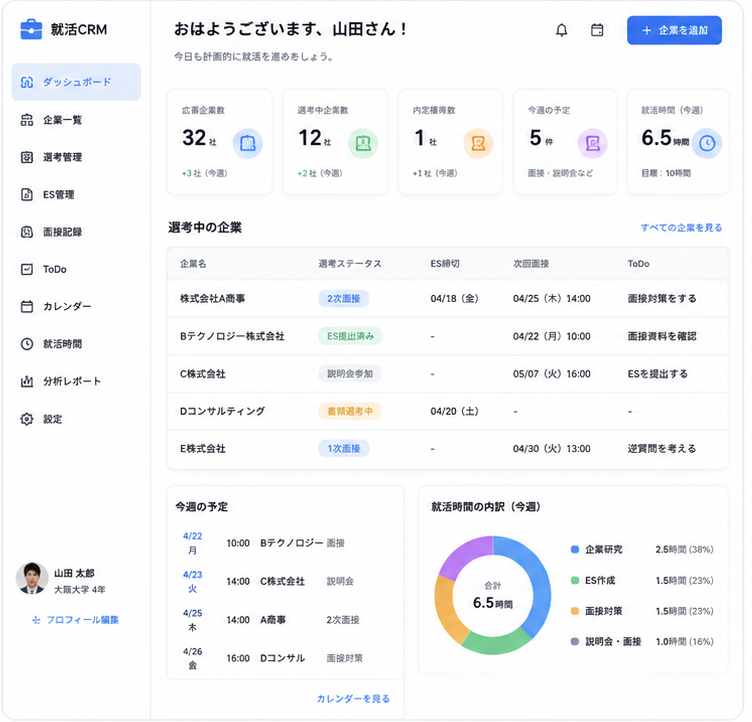

社会人になる前に、
「AIを使って仕事ができる人」になろう。
AI就活プロは、AI実務スキル × Vibe Coding × AI就活を一気通貫で学べる大学生向けキャリア教育サービスです。営業・マーケティング・バックオフィスなどの実務をAIで効率化する力を身につけ、WebサイトやAIアプリを自分で開発。そして、そのAIを実際の就活でも活用します。
※掲載企業は、AI就活プロ受講生に限らず、運営会社のインターン経験者の内定・選考実績を含みます。
自己分析、業界研究、企業探し、企業研究、ES、志望動機、面接対策。これらを何十社分も繰り返します。
※エントリー社数・ES提出社数：ディスコ「キャリタス就活2027 学生モニター調査」（2026年4月1日時点／n=1,057）。就職活動費用：リクルート就職みらい研究所「就職プロセス調査（2025年卒）」（2024年6月時点の平均額）。
その結果、
学業を削る。アルバイトを削る。
自分の時間を削る。
企業研究、ES、面接対策。就活には、やるべきことがあまりにも多い。
でも、そのすべてを自分ひとりでやる必要はありません。
AIを使えば、
就活はもっと速く、もっと深く、もっと強くなる。
これからの就活は、
「AIをどう使いこなすか」で変わっていく。
就活の各工程は、AIを前提にすると進め方そのものが変わります。6つの工程で、実際にどう変わるのかを見てください。
20社の選考を進める
モデルケース。
45時間を、就活の武器に。
AIに任せられる作業はAIへ。
生まれた45時間を、面接対策や企業研究、自分自身と向き合う時間に使う。
※当社想定のモデルケース。利用状況により異なります。
AI就活プロで身につけるのは、ツールの使い方だけではありません。
実際の業務課題をAIで解決し、その経験そのものを就活の武器にします。
「ChatGPTを使ったことがあります」
「ES作成にAIを使っています」
「営業業務を分析し、
AIを活用した業務改善を設計しました」
「面接動画を解析する
Webアプリを開発しました」
「使えます」ではなく、
「作りました。変えました。」を自己PRに。
AI就活プロでは、AIの実務活用からWeb・AIアプリ開発、AIを活用した就活までを一気通貫で学びます。
学習して終わるのではなく、身につけたAIスキルと制作実績を武器に、実際の就職活動まで進める教育プログラムです。
5職種・約30ケースの実務をAIで効率化する
Webサイト・AIアプリを自分で作り、ポートフォリオにする
自己分析から面接改善まで、AIで就活を進める
AIを前提に働ける人材として評価される
内定までの期間は学年・志望業界によって異なります。その後、AIを使って働ける社会人へ。
バックオフィス、営業、マーケティングなど、実際のビジネスで行われている業務をケーススタディとして体験。
「この仕事は、こうやって進むんだ。」で終わるのではなく、その業務をAIでどう効率化・自動化できるかまで実践します。
仕事を知る。AIで、仕事を変える。
就活前に、その両方を経験します。
AI就活プロでは、実際の社会人の仕事を題材に、業務を理解・分解し、AIで効率化・自動化するところまでを実践します。
30ケース以上の中から、バックオフィス業務「請求書照合」を例に、実際の学習内容を見てみましょう。
企業には取引先から多くの請求書が届きます。バックオフィスでは、請求された「金額・件数・取引内容」が社内の管理データと一致しているかを確認します。
件数が増えるほど、確認に時間がかかり、ミスも起こりやすくなる。
画面はイメージです。
「AIが使える学生」ではなく、
「AIで仕事を変えられる学生」へ。
実際の仕事を理解し、業務を分解し、どこをAIに任せ、どう効率化するかまで設計する。AI就活プロでは、この一連の思考と実践を社会人になる前から身につけます。
※画面・業務フローは学習内容をイメージした一例です。
AI実務スキルとVibe Codingをどう学び、就活でどう活かすのか。
無料説明会で、AI就活プロの学び方をご紹介します。
プログラミング経験は必要ありません。Claude CodeなどのAIコーディングツールを使い、作りたいものを言葉で伝えながら、WebサイトやAIアプリを実際に開発します。
ただ作るだけではなく、課題を見つけ、要件を整理し、AIに指示して形にする。就活では「AIが使えます」ではなく、「AIでこれを作りました」と言える状態を目指します。
面接動画をアップロードすると、文字起こしと評価が出るページを作って
構成を3ファイルに分けて実装します。まず解析処理から作成します。
画面はイメージです。実際の講座ではご自身の課題に合わせて開発を進めます。
理解するだけでは、身につかない。
だから、実際につくる。
会社ホームページから、就活CRM、AI面接改善アプリまで。
3ヶ月で実際に手を動かして5つの制作物をつくります。
完成したものは、あなたのAIスキルを
「言葉ではなく、実物で示す」ポートフォリオになります。
01・02 は、Web制作の基礎を身につける制作物です。
そして、自分の就活でそのまま使う2本。
企業／ES締切／説明会／面接／選考状況／ToDo／就活時間／面接記録 を一元管理。散らばりがちな就活の情報を、ひとつの画面にまとめます。つくったその日から、自分の選考管理に使えます。

動画をアップロードすれば、文字起こしから評価・改善案までを自動で。面接の振り返りを、感覚ではなく記録で行えます。
掲載の画面はイメージです。仕様は改善のため変更する場合があります。
最後は、課題発見から公開まで自分だけで。
自分で見つけた課題を、自分で要件に落とし、AIへ指示して開発する最終制作。ここまで来ると、面接で語れるのは「使えます」ではなく「つくりました」になります。
18.5h
今週の学習時間
7
完了タスク
AIを学んだという知識ではなく、実際に改善した業務、作ったWebサイトやAIアプリ、開発の記録まで残ります。
ESや面接では、「AIが使えます」ではなく、「AIでこれを作りました。こう改善しました。」と具体的な成果で語れる状態を目指します。
「AIが使えます」ではなく、
「AIで作りました。改善しました。」を自己PRに。
「アルバイトでリーダーを頑張りました。」
「サークル運営を頑張りました。」
「留学しました。」
経験そのものは価値があっても、他の学生と差がつきにくい。
「AIで営業業務を効率化しました。」
「Webアプリを5本開発しました。」
「業務を分析し、人間とAIの役割分担を設計しました。」
成果物とプロセスがあるから、深掘りされるほど強くなる。
AIを使えることではなく、
AIを使って課題を解決した経験を作る。
自己分析から内定までの9ステップ。すべての工程でAIを使い、手戻りの少ない就活を設計します。
学業、アルバイト、インターン、友人との時間。大学生の今しかできないことを大切にしながら、AIで就活を効率よく進める。
大学生活を謳歌することも、理想のキャリアを目指すことも、諦めない。
大学生活を楽しむ。
そして、行きたい会社の内定も勝ち取る。
ゼミや研究に打ち込める。学びを犠牲にせず、選考準備も進められる。
シフトを削らずに済む。学生生活を保ちながら、選考も進められる。
長期インターンに挑戦できる。その経験が、そのまま選考で語れる強みに。
旅行も、遊ぶ約束も。学生のうちにしかできない時間を手放さない。
浮いた時間をさらにAIへ。作れるものが増えるほど、語れることも増える。
動画・テキストで学び、実際に手を動かして課題に挑戦。
フィードバックを受けて改善し、合格したら次のステップへ進みます。
教材の内容や課題、AIツールの使い方など、学習中に分からないことはいつでも質問できます。
対象コースでは専任担当者が、学習の進捗から就職活動まで継続してサポートします。
※対象コースのみどのコースもPHASE1・PHASE2は共通です。違いは「就活をどこまで一緒に走るか」です。
AI CAREERは、AI就活カリキュラムを使って自分自身で就活を進めるコースです。専任担当や継続的なES添削、進捗管理、内定までの伴走はありません。重要なタイミングで4回だけプロへ相談できる、という位置付けです。
※価格はすべて税込です。表示内容は2026年8月時点のものです。
学年と、就活をどう進めたいか。この2つで選べます。迷う場合は無料説明会でご相談ください。
※上記はあくまで目安です。学年やご状況によって最適なコースは変わりますので、無料説明会でお話をうかがったうえでご提案します。
就活は数ヶ月。でも、その先の社会人生活は何十年も続く。
だからAI就活プロが目指すのは、「内定を取れる学生」をつくることだけではありません。
実際の仕事を知り、AIで業務を変え、自分でWebサイトやアプリまでつくれる。
社会に出たその日から、
同期とは違うスタートラインに立つ。
内定を勝ち取る。
そして、入社後も圧倒する。
はい、未経験の方を前提にカリキュラムを設計しています。AIコーディングツールを使って開発を進めるため、文法の暗記から始める必要はありません。そのかわり「何を、なぜ作りたいのか」を言葉にする力は繰り返し鍛えます。AIに正しく指示を出せることが、そのまま制作物の質につながるためです。
問題ありません。初回の基礎パートで、アカウントの準備から基本的な使い方、指示の出し方までを順番に扱います。これまで一度も触れたことがない状態からスタートする受講生を想定した内容です。
オンライン完結で、動画とテキストを使って自分で進める形式のため、学習する時間帯は自由です。授業の空きコマ、バイト終わり、休日など、ご自身のペースに合わせて調整できます。ただし課題の提出とフィードバックのサイクルがあるので、まったく手をつけない週が続くと進みにくくなります。無理のない進め方は無料説明会でご相談ください。
Windows・Macどちらでも受講いただけます。必要なのはPCとインターネット環境だけで、高性能なマシンや特別な機材は不要です。推奨環境の詳細は無料説明会でお伝えします。
早く始めるほど、身につけたAIスキルを使える期間が長くなります。大学1〜2年生の方はAI SKILL、大学3年生の方はAI CAREERまたはAI CAREER PROと、学年に合わせてコースが分かれています。3年生の場合は志望業界の選考開始時期から逆算して、いつまでにPHASE3へ入るべきかを一緒に決めていきます。
AI CAREERは、AI就活カリキュラムを使って自分自身で就活を進めるコースです。プロへの1on1相談は最大4回で、専任担当・継続的なES添削・進捗管理・内定までの伴走は含まれません。一方AI CAREER PROは専任のキャリア担当がつき、最大20回の1on1、ES・自己PR等の個別添削、就活進捗管理、企業別の選考対策を通して内定まで伴走します。
AI TA（AIティーチングアシスタント）にいつでも質問できます。エラー画面のスクリーンショットをそのまま貼って、どこが原因かを聞くことも可能です。AIで解決できない内容は運営へエスカレーションされ、担当者が対応します。
あります。課題ごとに評価基準が定められていて、それに基づいたフィードバックが返ります。提出 → フィードバック → 改善 → 合格というサイクルで進めるため、わからないまま次に進むことがありません。基準に届かなかった場合は、指摘をもとに再提出していただきます。
カリキュラムの進捗状況と、制作した成果物の内容をふまえてご案内しています。企業へお渡しする以上、一定の水準に達していることが前提になるためです。受講いただいた全員に必ず紹介を保証するものではない点は、あらかじめご了承ください。
ご受講いただくコースによって異なります。AI SKILLはスキル習得が中心、AI CAREER・AI CAREER PROは就活のフェーズまで含むため、期間の考え方も変わります。ご検討中のコースと学年に合わせて、無料説明会で具体的にご説明します。
その他のご質問は、無料説明会でお気軽にお聞きください。